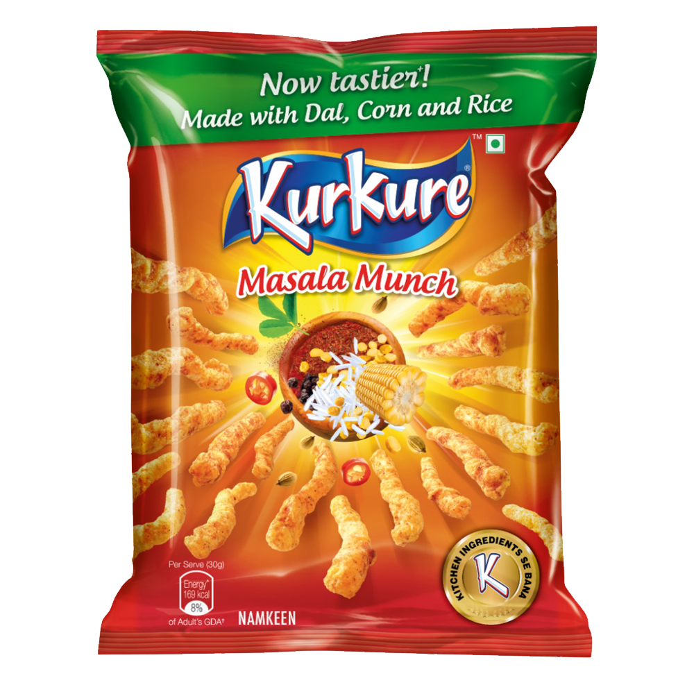

Kurkure
PepsiCo India
Haryana
F
INGREDIENTS
- Rice Meal
- Corn Meal
- Gram Meal (Besan)
- Edible Vegetable Oil (Palm / Palmolein)
- Spices & Condiments
- Salt
- Sugar
- Flavour Enhancers
- Monosodium Glutamate (INS 621)
- Disodium Guanylate (INS 627)
- Disodium Inosinate (INS 631)
- Acidity Regulator (Citric Acid – INS 330)
- Antioxidant (TBHQ – INS 319)
Safe
- Rice Meal – Basic carbohydrate source
- Corn Meal – Energy-providing grain
- Gram Meal (Besan) – Adds some protein
- Spices & Condiments – Natural flavour components
Mild
- Edible Vegetable Oil (Palm / Palmolein) – High fat; excess not ideal
- Salt – High sodium if consumed often
- Sugar – Added in small amounts
- Citric Acid (INS 330) – Acidity regulator
Unsafe
-
Flavour Enhancers
- MSG (INS 621)
- Disodium Guanylate (INS 627)
- Disodium Inosinate (INS 631)
- Encourage overconsumption; no nutrition
- TBHQ (INS 319) – Synthetic antioxidant; frequent intake discouraged
- Deep-Fried Processing – High calorie density, low satiety
Alternative
- Roasted Chana – High protein, low fat
- Makhanas (Fox Nuts) – Light, low oil snack
- Homemade Popcorn – Minimal oil, whole grain
- Roasted Peanuts – Healthy fats and protein
- Bhel (Light Oil) – Fresher, customizable option